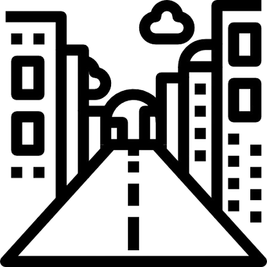

Educação e Cultura
Manutenção de Escolas — Reparos essenciais em infraestrutura;
Salários e Benefícios — Folha de pagamento dos educadores;
Materiais Didáticos — Compra de livros e insumos;
Eventos Culturais - Fomento a atividades locais.
Sua ferramenta para auditar e fiscalizar as finanças da cidade com clareza e dados reais.
Pesquise todo o histórico de um CNPJ, CPF ou Empresa.
Acompanhe reformas, construções e infraestrutura na cidade.
Manutenção de Escolas — Reparos essenciais em infraestrutura;
Salários e Benefícios — Folha de pagamento dos educadores;
Materiais Didáticos — Compra de livros e insumos;
Eventos Culturais - Fomento a atividades locais.
Compra de Medicamentos - Aquisição de insumos para farmácia municipal;
Gestão de Hospitais - Manutenção e operação dos centros de saúde;
Saneamento Básico - Obras e serviços de água e esgoto;
Controle de Endemias - Ações de prevenção a doenças.

Recapeamento Asfáltico - Obras de pavimentação em ruas;
Manutenção de Rede de Iluminação - Troca de lâmpadas e expansão;
Limpeza Pública - Coleta de lixo e limpeza de logradouros;
Construção de Praças -Novos espaços de lazer e convivência.